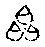

疏。始本無二絕二礙者。此有二意。一則眾生本有佛智。是則本覺不礙始覺。如是而證名無礙智。二者斷障顯了則無煩惱所知二礙。
疏。合出經益物等者。疏文有二。先正釋文。後然如來藏經等下引例釋者。言九喻者。如來藏經具有九喻。一二不同餘經。或有一二三四。多少不定故致等言。言如來藏經者。即如來在王舍城耆闍崛山。成佛十年後方說之與大比丘百千人菩薩六十恒河沙云云。爾時世尊於栴檀重閣正坐三昧而現神變。有千葉蓮華。大如車輪其數無量。色香具足而未開敷。一切華內皆有化佛。上昇虛空彌覆世界。猶如寶帳。一一蓮華放無量光。一切蓮華同時舒榮。佛神力故。須臾之間皆悉萎變。其諸華內一切化佛結跏趺坐。各放無數百千光明。於時此剎莊嚴殊特一切大眾歡喜踊躍(云云)金剛慧菩薩問佛下。為答云。我以佛眼觀一切眾生貪欲恚癡諸煩惱中有如來智如來眼如來身。結跏趺坐儼然不動。善男子。一切眾生雖在諸趣煩惱身中有如來藏。常無染污德相備足如我無異。又善男子。一譬如天眼之人觀未敷華。見諸華內有如來身結跏趺坐。除其萎華便得顯現。如是善男子。佛見眾生如來藏已。欲令開敷為說經法。滅除煩惱顯現佛性。善男子。諸佛法爾。若佛出世若不出世。一切眾生如來之藏常住不變。但彼眾生煩惱覆故。如來出世廣為說法。除滅塵勞成一切智(云云)每喻之後皆有偈文。二復次善男子。譬如淳蜜在巖樹中。無數群蜂圍遶守護。時有一人巧智方便先除彼蜂。乃取其蜜隨意食用。惠及近遠。下取意合。蜜喻如來藏。蜂喻煩惱。人喻如來。除蜂喻說法除煩惱。三復次善男子。譬如粳糧。未離皮糩貧愚輕賤謂為可棄除蕩既精當為御用。合云。糠喻煩惱。米喻如來知見說法除煩惱淨一切智。於諸世間為最正覺。四復次善男子。譬如真金。墮不淨處隱沒不現。經歷年載真金不壞。而莫能知。有天眼者語眾人言此不淨中有真金寶。汝可出之隨意受用。法合例知。五復次善男子。譬如貧家有珍寶藏。珍寶藏不能言我在於此。既不自知。又無語者。不能開發此珍寶藏。一切眾生亦復如是。如來知見力無所畏。大法寶藏在其身內。不聞不知耽惑五欲。流轉生死受苦無量。是故諸佛出興于世。為開身內如來法藏。無礙辯才為大施主。六復次善男子。譬如菴羅果內實不壞種之於地成大樹王。善男子。我以佛眼觀諸眾生。如來寶藏在無明[穀-禾+卵]內。猶如果種在於核內。善男子。彼如來藏清淨無極。大智慧聚妙寂泥洹。名為如來應正等覺。七復次善男子。譬如有人。持真金像行詣他國。經遊險路懼遭劫奪。裹以弊物令無識者。此人於道忽便命終。於是金像棄捐曠野。行人躡跡咸謂不淨。得天眼者見弊物中有真金像。即為出之一切禮敬。合有如來微妙寶藏。八復次善男子。譬如女人貧賤醜陋。眾人所惡而懷貴子。當為聖王王四天下。此人不知經歷時節。常作下劣生賤子想。合有如來寶藏。九復次善男子。譬如鑄師鑄真金像。既鑄成已倒置于地。外現燋黑內像不變。開模出像金色晃曜。合云有如來身眾相具足。下校量功德。受持此經供養過去恒河沙現在諸佛。造恒河沙七寶臺高十由旬。日日如是。乃至五十恒河沙七寶臺供養恒河沙如來。不如有人喜樂菩提受持此經。乃至算數譬喻所不能及。上之九喻。初蓮華有佛喻與青蓮在泥喻。大同小異。其金墮不淨處與摩尼墮深廁中大同。彼闕此如金在於鑛。如蜜在山中。餘多大同。而不次第者。此取圓意略舉十耳。山中有蜜。又與塵中佛性小異。故略無之。又此引為順圓融。自凡至聖具含諸義。故亂引之。若依佛性論具釋九喻。雖不引如來藏經。而與此經喻次全同。各別有意。廣如佛性論。別鈔中已引。言餘經或有一二三等者。涅槃勝鬘等經皆說。不能具引。金鑛之喻涅槃第十有文云。復次善男子。譬如金鑛淘煉滓穢。然後銷鎔成金之後。價直無量。善男子。聲聞緣覺菩薩亦爾。皆得成就同一佛性。何以故。除煩惱故如彼金鑛除諸滓穢。以是義故。一切眾生同一佛性無有差別。以其先聞如來蜜藏。後成佛時自然得知。如彼長者知乳一相。何以故。以斷無量煩惱故。釋曰。以是長者多牛[(殼-一)/牛]乳一色喻。復轉以顯故。第五經中有雪山甘藥喻。全同淳蜜在巖喻。餘有多喻不能具引。大價摩尼垢衣所纏者。即楞伽第二。疏當第五。經云爾時大慧菩薩摩訶薩白佛言。世尊。世尊修多羅說。如來藏自性清淨。轉三十二相。入於一切眾生身中。如大價寶垢衣所纏。如來之藏常住不變亦復如是。而陰界入垢衣所纏。貪欲恚癡不實妄想塵勞所污。一切諸佛演說。釋曰。此中大慧引昔之說下。難同外道說我。佛下答不同外道故但是虛妄無有真實。如來說如來藏有時說空無相無願如實際法性法身涅槃自性不生不滅本來寂靜自性涅槃。如是等句說如來藏等。餘經所有可略言也。
疏。故應更以下正釋經文。由經云以如是等無量相知。如是指前等即等後。更明別義。此結有四。一無量。二無礙。三不可思。四廣大。並遍上十及所不說。第五出現境界。
疏。正顯分齊下疏文有三。初出體。二依初義下對前二義以辯來意。三由所緣下融上二義。疏後正顯所緣下分二。先隨文釋。後若約二諦下義門料揀。第六出現之行前明分齊下文有二。先彰來意。後雖智海下通妨。謂有問言。行在因中今果滿何有。釋云。行雖無量總不出二。謂智與悲。智行已圓自利滿故。而運即智之悲利他不息。若爾何以下文說真如行。答此即果之行。將說悲智無礙之行。故說真如行之本耳。
疏。真如之名言含法喻者。經云如真如前際不生等。即以真如喻佛行也。若佛行契如行即是如故即是法。
疏。過未非緣者。過去緣已謝未來緣未會。故曰非緣。由非緣故過去無可生。未來無可動。現在雖在緣中不與緣合。故云離緣。故迴向中明。遍在三世不同三世。遍在一切而非一切。故緣雖起而湛然無起。
疏。若謂無量即是量故者。離量有無量故。故楞伽云。無心量之心量。我說為心量。謂以無心量而為是者。而還是心量耳。故心彌虛下上句明無量不礙量。終曰行句明量即無量。但涅槃云下引證。即第十一經。遠公有二釋。一云辯行所依謂如來先成之德。修習趣入亦可五行。是其教行顯性成行。是如來。行顯如來性以成行故。意云此一即是證行證性而成行故。第七出現菩提。
疏。圓行之果下明來意有二。上約真菩提辯來意。對緣造修下約應菩提以辯來意。
疏。二明體等者此引二論。二互相成。攝論第九智論第三。二智即根本後得。二斷即斷煩惱所知。此經圓宗故。通一切下。云得一切法量等三輪自他平等因果交徹。如是等義故通一切。
疏。三辯種類中二。先正辯後料揀。今初者。言夫如者。不二不異者。即彌勒章。下當辯意。涅槃云下智觀等。六地已引。
疏。或分為五如大品等者。智論五十八云。一發心菩提。無量生死中發阿耨多羅三藐三菩提心故名菩提。因中說果。二伏心菩提。斷諸煩惱降伏其心行諸波羅蜜。三明心菩提。觀三世諸佛法本末總別相。分別得諸法實相。謂般若波羅蜜。四出到菩提。於涅槃中得方便力故不著。若滅一切煩惱見一切佛得無生法忍。出三界到薩婆若。五無上菩提坐道場斷習氣。得阿耨多羅三藐三菩提。
疏。或具十如離世間品者。即五十九經十種成如來力為十菩提。經云。佛子菩薩摩訶薩有十種成如來力。何等為十。所謂一超過一切眾魔煩惱業。故成如來力。二具足一切菩薩行。遊戲一切菩薩三昧門故成如來力。三具足一切菩薩廣大禪定故。四圓滿一切白淨助道法故。五得一切法智慧光明善思惟分別故。六其身周遍一切世界故。七所出言音悉與一切眾生心等故。八能以神力加持一切故。九與三世諸佛身語意業等無有異。於一念中了三世法故。十得善覺智三昧。具如來十力。所謂是處非處智力。乃至漏盡智力故。成如來力是為十。若諸菩薩具此十力。則名如來應正等覺。句句皆有成如來力言。此十菩提多同今經。
疏。唯十為圓下第二料揀先示別教。後三除前二下約同教門揀而收之。
疏。四明業用等者。以下科經有其十門。兼體相用。今唯辯用有其十耳。不出下文。
疏。離諸緣者。有觀則有緣無緣則絕觀。如海下釋文以成上義。非無所了下成上觀極於無觀義。謂觀智之極謂之無觀。無彼分別取相之觀。非無甚深無分別觀。故引晉經解一切義合明二經。應云解一切義無所觀察。若改為解義則圓足。譯經之人見下文有知眾生心故。此但明無觀之義。
疏。無觀是體下結成具三。無觀是體者無念體也。照智是上無分別智。斷即是向無惑習種。合為相者。謂寂照無二為菩提相。猶如明鏡無心為體鑑照為用合為其相。亦即禪宗即體之用。自知即用之體恒寂。知寂不二為心之相也。
疏。上二已攝。攝論體者。初是實智。斷煩惱障。二是權智。斷所知障。故二句中已具二智二斷體也。
疏。三一成一切成者。釋經無二即是下文因果交徹。於中有二。一明生佛不二。即一成一切成故。下釋云。如來成正覺時。於其身中普見一切眾生成正覺等。暗引淨名一切眾生即菩提相。即菩提相于何不成。二明能所不二。即下釋中皆同一性。又引淨名不二是菩提離意法故。法即是所意即是能。良以心境同一性故。生佛亦然。此引淨名。皆彌勒章。
疏。四總指前三體相寂滅者。釋經無相。即是下文。體離虧盈下釋云。成與不成常無增減。菩提非相非非相故。由寂滅故無有虧盈寂滅即是無相義也。故引淨名。云滅諸相故釋於寂滅。
疏。五即心行處滅者。釋經無行。即是下文相無增減。故云湛然不遷耳。釋云若無有相則無增減。
疏。六雖覺而常定者。釋經無止。以不住定故。即是下文用該動寂。下釋云。住善覺智三昧而現多身。由不住止故能動用。
疏。七有二義等者。釋經無量。即是下文周于法界。此中有二下釋亦二。一明一毛含於多佛周遍法界。即是此中初義。二云如來成正覺身究竟無生滅故。即第二義。
疏。八亦二義等者。釋經無際。即是下文普遍諸心。下釋亦二。一云菩薩應知自心念念常有佛成正覺。即此竪無際畔。二下釋云。何以故。諸佛如來不離此心成正覺故。即第二意念念應即是化身。一得永常即是報身。心無初相下契同法界身。然此一句即起信論。論云。菩薩地盡覺心初起。心無初相。以其遠離微細念故得見心性。心即常住名究竟覺。下云不離此心即冥符理義。然覺心初起心無初相。自有二意。一者覺是能覺心是所覺。心是初相即業相是微細念。最初迷真不覺心動。今無此相故。二者覺心合明。謂正覺心起無能起相。故與理冥。若有起相不合理故。正此取意。故云心無初相冥符於理。義兼於前。以無細念故。無覺相由依法相。化身有始有終。報身有始無終。法身無始無終。今符於理報亦無始。故云始覺同本覺。無復始本之異。名究竟覺。故云無前際故則無始也。無終同於上句無後際耳。法報既融即體之應念念無斷。三身融矣。
疏。九離邊契中下釋經遠離二邊住於中道。即是下文普遍諸心。下釋云。廣大周遍無處不有。不離不斷無有休息。入不思議方便法門。疏文有二。先釋離邊。後釋住中。今初。經云離邊。未知何是。故舉晉經。及取下釋略舉四種。以等一切染淨約惑縛脫通惑業。有無通事理。一異約心境。何以有此。謂成菩提既離細念。妄惑盡矣。顯現法身智慧純淨。若為此見未免是邊。故上經云。若有見正覺解脫離諸漏不著一切世。彼非證道眼。今了於惑體性本空後無所淨故離二邊。又染淨交徹故無住著。是曰離邊。縛脫者謂昔常被惑業繫縛流轉無窮。今得菩提釋然解脫。若為此見即是住邊。菩提智了本自無縛。於何有解。無縛無解則無樂厭。故得離耳。有無上言通事理者。若昔謂惑有今了惑空。昔謂心空今知妙有。又真樂本有失而不知。妄苦本空得而不覺。今日始知。空者妄苦。有者涅槃。若如是知並未離邊。又煩惱業苦本有今無。菩提佛身本無今有等。皆三世有法。菩提之性不屬三世故。三世有無皆是邊攝。真智契理絕於三世故。離有無之二邊等。一異有二。一者心境不了則二。契合則一。亦成於邊。二者生佛有異今了一性亦名為邊。今正覺了此中無有二無二。亦復無大智善見者如理巧安住故。離此邊而言等者。謂斷常來去生滅依正。離是二法皆稱為邊。又二與不二亦名為邊。今一契菩提一切都寂。故云遠離。
疏。不偏住著等下釋住於中道。然通妨難生下契中。謂有難言。若離於邊未免於邊。有取捨故。故釋云。不偏住著名曰離邊。非見有邊而可離也。謂不偏住染染性空故。性即淨故。不偏住淨。若無染則無淨故。淨相離故。同染性故。染淨交徹安可住耶。智契此理故曰離邊。故言非見有邊。邊即中故。復有難云。有邊即有中邊。既即中則無邊矣。既無有邊對何說中。故次答云無邊無中方住中道。此有二意。一順上答。謂誠如所言。無邊無中故曰中道。若有中邊非真中也。二者反上答。謂中道有二。一者相待則離邊住中。二者絕相即邊而中。相待而空則有邊中。無邊無中為真中矣。故相待絕待尚是相待。得意亡言言不盡矣。歷上染淨等一一皆然。
疏。十總顯離言。釋經出過一切文字言說。即是下文體相甚深。斯則上九寄言顯深。今菩提離言顯深。
疏。無所現有三義者。一無心現約止。二所現空約觀。三無別體約止觀契合。又一約心。二約境。三心境兩冥。又一約智。二約理。三理智冥契。就第三義中。疏先正釋。後自體顯現故名為覺者通妨。謂有難言。若無別體何能普現眾生心行。故答云。自體顯現如珠有光自照珠體。珠體喻心光喻於智。心之體性即諸法性。照諸法時是自照耳。故引起信文甚分明。然論問曰。虛空無邊故世界無邊。世界無邊故眾生無邊。眾生無邊故心行差別亦復無邊。如是境界不可分家。難知難解。若無明斷無有心想。云何能了名一切種智。答曰。一切境界本來一心離於想念。以諸眾生妄見境界故。心有分齊。以妄起想念不稱法性故不能決了。諸佛如來離於見想無所不遍。心真實故即是諸法之性自體顯照一切妄法。有大智用無量方便。隨諸眾生所應得解。皆能開示種種法義。是故得名一切種智。釋曰。
疏。今初。有十三身下疏文有三。初略釋文。二皆言量下別釋量字。三是以聖人下結成玄旨。即肇公涅槃無名論通古中文。出前窮源中云非眾生無以御三乘。非三乘無以成涅槃。然必先有眾生後有涅槃。是則涅槃有始。有始必有終。而經云涅槃無始無終湛若虛空。則涅槃先有非復學而後成者也。釋曰。此文以修得。難今涅槃有始終義。以涅槃無始終難其修得故通古。答云。無行名涅槃。至人空洞無像而物無非我。造會萬物以成己者。其唯聖人乎。何則非理不聖非聖不理。理而為聖者聖不異理也。故天帝曰。般若當於何求。善吉曰。般若不可於色中求。亦不可離色中求。又曰。見緣起為見法。見法為見佛。斯則物我不異之効也。所以至人戢玄機於未兆。藏冥運於即化。總六合以鏡心。一去來以成體。古今通始終。同窮本極末。莫之與二。浩然太均。乃曰涅槃。釋曰。彼雖明涅槃。亦以能證所證契合故物我一體。今雖約菩提亦取能所一體。故得用其文耳。
疏。今初八相之中下。疏文有四。初略消經文。二會淨名。三對前揀異。四廣徵釋。疏此文正同下第二會淨名。於中三。初正顯同。二出彼經意。三正會釋。今初。即菩薩品。彌勒為兜率天子說不退轉地之行。淨名難云。為從如生得授記耶。為從如滅得授記耶。若以如生得授記者。如無有生。若以如滅得授記者。如無有滅。一切眾生皆如也。一切法亦如也。眾聖賢亦如也。至於彌勒亦如也。若彌勒得授記者。一切眾生亦應授記。所以者何。夫如者不二不異。若彌勒得阿耨多羅三藐三菩提者。一切眾生皆亦應得。所以者何。一切眾生即菩提相。若彌勒得滅度者。一切眾生亦當滅度。所以者何。諸佛知一切眾生畢竟寂滅即涅槃相。不復更滅。釋曰。今正釋成正覺義。故但引菩提。若據經文云乃至入涅槃。則亦有亦當滅度之義故。今具引耳。
疏。彌勒示迷此旨下。第二出彼經意。既為補處何理不窮。寄於受屈以悟時聽耳。言但謂理詰之言者。即是迷相。然迷有二意。一約彌勒受難。云一切同如而我獨得授記。誠乖理也。故云理詰之言。二者彌勒不受難云。理雖一如行滿得記。何得以理而難事耶。故云理詰。
疏。不知真得菩提實如所詰者。三正會釋淨名。非曰妄詰。真實菩提誠乃一得一切得耳。則受難不受難俱迷此理。若顯不迷應對淨名。實如所言。我已見生得記作佛入涅槃竟。
疏。又前章下三對前揀異。則前是普遍。此是廣容。言一性平等反覆相成者。前章明平等此章明一性。故下釋中皆同一性。由平等故唯是一性。由一性故何不等耶。故云相成疏。此中之成下。第四廣徵釋。先徵。後此是華嚴大節下釋。於中二。先標示。後然諸眾生下別釋。即五教意兼人天為六。初人天乘。二小乘下二乘。三大乘下始教。四或說唯如來藏下終教。五更有下頓教。六若依此宗下圓教。於中四。一正釋。二解妨。三結例四重釋。
疏。若爾下二解妨。於中五。一申難。二若就眾生下解釋。此中意云。以理融通不可作理事別解。三若爾下以能難所。佛既了達何用化耶。四不如是知下釋化之由。五如是化下結成真化。言無不化時即常化也。故引相續正成常恒。
疏。隨門不同種種有異下第三結例。即類結餘門。門雖有多且略分四。一約性。即一真法界。二約相。即無盡事法。三約性相交徹。顯此二門不即不離。四以性融相德用重重。初約性門者。問體是佛不。答是若無礙應成四句。一是佛法性身無所不至故。經云。性空即是佛故。二非佛絕能所覺。為其性平等一真法界。非佛非眾生故。三亦佛亦非佛。以法性身無自性故。四雙非。性與無性雙泯絕故。經云。無中無有二。無二亦復無。三世一切空。是則諸佛見。二就相門乃有二義。一情。二非情。真心隨緣變能所故。然此二門各分染淨。謂無明熏真如成染緣起。真如熏無明成淨緣起。染成萬類淨至成佛。以修淨緣斷彼染緣。方得成佛。依此二義則生佛不同。於淨緣中復有因果。因有純雜果有依正。若約純門隨一菩薩盡未來際唯修一行。一一皆然。若約雜門。萬行齊修盡未來際。若約因門盡未來際常是菩薩。若約果門盡未來際常是如來。經云。為眾生故念念新新成等正覺。若雙辯二門。盡未來際修因得果。若約雙非。盡未來際非因非果。便同真性。前之二門雙具悲智雙融心境。第三性相交徹門中。曲有四門。一以性隨相同第二門。二會相歸性同第一門。三雙存無礙具上二門。依此則悲智雙運性相齊驅。寂照雙流成大自在。四互奪雙亡則性相俱絕。沒同果海無成不成。第四以性融相門。相雖萬差無不即性。性德包含全在相中。以性融相相如於性。令上諸門皆無障礙。因果交徹純雜相融。事事相參重重無盡。今就性門四句之內。是即佛門不取餘三。就相門中約有情門。是淨非染是果非因。是一分義。非此所用。就交徹門。佛則性相雙融。生則會相歸性。今經正約第四以性融相。一成一切皆成。謂以佛之淨性融生之染。以佛一性融生之多。令多染生隨一真性。皆如於佛已成佛竟。非唯有情。會萬類相融為佛體。無不皆成。故肇公云。會萬物而成己者。其唯聖人乎。又云。故至人空洞無像物無非我。以佛之性融於物性。同佛皆成。以物之性融佛之相。故令三業等於萬類。即今經意而非餘門。故云隨門不同。今是成佛門也。頓教多同約性四門。終教即同性相交徹。始教有二。一者幻有即空同會相歸性。但唯心現多同第二。小乘人天皆同相門。由此有云無情成佛。是約性相相融。以情之性融無情相。以無情相隨性融同有情之性。故說無情有成佛義。若以無情不成佛義融情之相。亦得說言諸眾生不成佛也。以成與不成情與無情無二性故。法界無限故。佛體普周故。色空無二故。法無定性故。十身圓融故。緣起相由故。生界無盡故。因果周遍故。遠離斷常故。萬法虛融故。故說一成一切成也。非謂無情亦有覺性同情成佛。若許成佛此成則能修因。無情變情情變無情。便同邪見。餘義具如前後廣說。
疏。又此眾生乃是像上之模者。四重釋此是一義。前同佛心塵中經卷。下同第十普遍諸心。以見自成即見他成。同下自心念念常有佛成正覺。
疏。二釋中先總釋等者。此有三意。一云同一無性故得現成者。謂既無二性佛證一性得成佛故。生隨一性皆成佛矣。二云妄性本虛生元是佛者。生自有妄見生非佛。佛了妄虛生何非佛。三真性叵得非今始成者。若有可得今得成佛。證性叵得佛非始成。佛非始成佛本是佛。佛之本佛何異生佛。是故一成一切皆成。亦可說言若一不成一切不成。同一性故。今是成佛門故。故一切皆成佛也。
疏。後釋所無有十二句下。疏文有二。先消文後成對。前中言非獨妄空真有等者。揀宗顯別。妄空真有法相宗說。遍計是空圓成是有故。涅槃經說。生死是空涅槃不空。三論中云。妄說為有真諦空故。今十二句生即是妄。佛即是真。真妄俱非不應偏說。
疏。以性融相法界圓現者。示其正理生佛真妄皆是相異。融同真界故。說一成一切皆成。是以結云由此無性說成正覺。若有取成非真覺故。是故文云亦復無有成正覺性。
疏。又攝十二下二成對也。一能相所相對者。相為所相盡即能相。所相法體即。是有為不出染淨。言相待有故者。釋成無義。染待淨有故無染相。淨待染有故無淨相。是故經云無相性也。言無盡性者。盡即能相。生滅染淨全是有為。然生滅四相略有二種。一剎那盡云念念滅。以緣滅故顯無滅性。二一期滅如煩惱性盡。以性空門顯無滅義。二生滅對。凡則緣生故本不生。性淨涅槃本來寂滅故不更滅。此對皆淨名意。前約滅惑此約滅苦。由滅惑苦則菩提生。故今遣之。言約佛菩提非始生者。性淨菩提非始修得。何有滅耶。三我非我對。以緣破我以我遣非我。言我尚不可得則非我。何可得。即不二法門。諸法實相中下以實相門雙遣。上二即中論文。前已頻引。四緣非緣對。眾生是緣攬緣無性故無眾生。非眾生為非緣。緣尚不可得。非緣何可得。即相待破。五能證所證對。並因緣門雙破能所。故上經云。知菩提性從緣起。入深法界無違逆。六合非合對。虛空無體不與物合。亦以因緣顯無虛空。成正覺者能所契合。亦因緣門釋無正覺。故一合相非一合相。疏物物無性下疏有二意。一由證無性故得成佛無性。即是大悲之體故得起悲二又只由下。由生不知佛證無性故化令知。
疏。是謂高而無上廣不可極者。顯高廣義。此及下大包天地等。皆是肇公涅槃無名論位體中文。彼云。經言。菩提之道不可圖度。高而無上廣不可極。淵而無下深不可測。大包天地細入無間。
疏。初明一毛含多下。疏文有二。先總科所屬。後此與下揀異。第八有三重揀。一約能現。前身為有分此毛為無分故。二又此下約所現揀。前通多類者。但言現身此云現佛故。三又前下約義相揀。前住體遍應者。即緣起相由門。由住緣起。一佛身體遍應一切。成多類故。一則如理下是法性融通門。法性如空有其二義。一則廣大無所不包故。譬如虛空具含眾象。二則體性周遍故。喻云。譬如虛空遍至一切色非色處。一毛含多即廣容義。遍法界毛即是普遍。是謂大包下一毛廣容即大包天地。多身入毛即細入無間。
疏。是知坐菩提下舉況顯勝。有頂即是權教中說真成之處。鹿園即是八相化身轉法之處。今於此成即周法界。此處轉法輪即於法界無盡處轉。疏此文正顯佛菩提者。成上非約因人有性是佛性義。今說佛菩提。而言眾生心有之者。即他果佛在我因人之心內耳。第八出現轉大法輪。今初等者明轉法輪。釋曰。然法輪義廣如別章。今略以三門分別。一釋名。二出體。三轉相。今初。然俱舍論亦名梵輪。如來大梵之所轉故。言法輪者。法即軌持。輪者如帝王輪。從喻得名。略有四義。一圓滿義。具轂輻輞軸等體用周備故。二摧壞義。摧壞煩惱如摧未伏等。三鎮遏義。已伏煩惱令勢轉遠故。如鎮已伏。四不定義。從見至修修。至無學。從自至他。他信至解。解至行果等。而言轉者說也。故總釋云。流演圓通名之為輪。自我之彼故名為轉。若別說者。略有四義。轉謂動也顯也運也起也。動宣言教顯揚妙理。運聖道於聲前。起真智於言後。圓摧障惱名轉法輪釋曰。此四約教理行果。如其次第下出轉體不出四故。出體轉相在文具之。
疏。夫轉法輪不出此五者。此五即是出體。亦是轉相。且第二出體者。大小諸教有多差別。今以大乘學貫通諸說。體總有五。一輪自性。謂擇法覺支正見正知等。通見修無學或取八聖道具輪輻轂輞故。正見思惟如轂。是根本故。正語業命說名為輻。由轂有故。正念動定說名為輞。攝錄餘故。二者法輪因。謂能生後聖道諸教聞思修等。諸經論中多說佛教為法輪故。三法輪眷屬。聖道助伴五蘊諸法。四法輪境。聖道所緣四諦因緣三性等理。五法輪果。謂因道所證菩提涅槃無為等果。大乘法師收取五體。不出教理行果。意明二即是教四即是理。一三皆行五即是果。今經五句即攝此五。一能轉心即是眷屬。二即自性。三即第五。四即第二。五即第四。若以教理行果攝今五者。後三可知。初一是行。二所詮理。亦是行攝。三轉約於見修等故。又此五句即是轉相。第三轉相者。瑜伽九十五說。由五種相轉法輪者。當知名為善轉法輪。一者世尊為菩薩時。為得所得所緣境界。二者為得所得方便。三者證得所應得。四皆自既得已以他相續。令於自證深生信解。五者令他於他所證深生信解。今經五句即攝彼五。一即第四令他信解。二即第二。三即第三。四即第五。五即第一。會釋可知。但言所得方便者。即以三周正轉見修無學。隨其次第知見現觀名得方便。瑜伽又說三周行相。名得所得之方便也。然上出體與其轉相皆大乘意。細尋二門多有相似。或應為一。彼是法相之所宗師。且順於彼。以今一五攝彼二五。
疏。二所轉體即示勸證者。一示相轉。二勸修轉。三作證轉。第一示相轉者。諸佛世尊正證諸法。隨何等器而指示之。如轉四諦言此身是苦。業惑為集。此滅為滅。能滅為道。示因緣等真理妙智例皆同此。當爾之時生聖慧眼。由示依去來今世有差別故。如其次第得眼智明覺。此之一智總名為眼。有三行相名智明覺。非於四諦別起四智。由真見道唯一剎那。不同小乘上下別觀。依詮證滅說通三世。非是滅諦通三世有。第二勸修轉者。如說四諦云此是苦。汝當知。此是集。汝當斷。此是滅。汝當證。此是道。汝當修。亦生眼智明覺。若轉因緣真實法等例此可知。第三作證轉者。如轉四諦云此是苦。我已知。此是集。我已斷。此是滅。我已證。此是道。我已修。亦生眼智明覺四行。轉餘例於此十二行。然其三轉。尊者妙音八正為轉。唯是見道。以憍陳那見道生時說名已轉。若通相說。諸有聖道皆名法輪。顯宗論說三轉即是三道。謂初是見道。二是修道。三是無學道。如憍陳那名已轉者已初轉故。大乘法師意取彼義。若成實師初轉生聞慧。次生思慧。後生修慧。無十二行。唯作一期行相。此言却通。以說陳如即得初果未經修道。何有初果第十六智。是修道故。又初雖示是苦集等。未勸知斷何因成果。若示勸轉已得果竟。何用引己而為證耶。是以見道通於三轉。義却長也。況通諸法皆有示勸及與證耶。故今經中始成正覺演大華嚴。轉一乘輪亦具三矣。大乘見道唯在初地。則彼地前應非始轉法輪矣。若別配二道者。第二轉者謂是有學。以其妙慧如實通達。我當於後猶有所作。應當遍知苦諦。應當永斷集諦。應當作證滅諦。應當修習未修道諦。如是有四種行相。如前應知。第三轉者。謂是無學。以得盡智無生智故。言所應作我皆已作。謂我已遍知未知苦諦。乃至廣說。我已修習未修道諦。亦有四行例前可知。釋曰。此即大乘諸師別配三轉屬於三道。而言證者。是彼自證。非佛證也。然今經文即是三轉中道法輪。永離邊見。亦具說於知斷證修。即是大乘無作四諦已申轉體。得果等四皆可虛求。
疏。是知其輪本來常清淨者。即暗引淨名寶積云。三轉法輪於大千。其輪本來常清淨。此言古來多釋。今取即事之真性淨之理為法輪體也。故後四段明相用深廣。則逈異餘宗。為不壞相略引餘釋耳。
疏。豈同三乘但用佛聲為法輪等耶者。揀實異權而言等者。就佛聲中揀尋常言。如問晴雨安慰弟子等亦非法輪。唯取轉法。又要令他斷惑見理。方明法輪。今此乃至數重深玄。一則不論斷不斷等說即名輪。故經云如來所轉妙法輪。一切皆是菩提分。若能聞已悟法性。如是之人常見佛。二者尋常之言亦是法論。如來無有散亂聲故言不虛發。如涅槃說。如來一切語言皆名轉法輪故。三者能令三界所有聲。聞者皆是如來音故。四者不揀聲與非聲。遍於法界皆法輪體。況復一多交徹相映融即。豈同三乘之法輪哉。第九出現涅槃。疏文分三。初來意。二彰大旨。三開章別釋。今初。轉化既周。躡前起後。安住祕藏顯真涅槃。為物示滅顯應涅槃。文具二故。
疏。然大涅槃下第二總明大旨以顯深玄。多用肇公涅槃無名論。有十演九折。十演者。謂一開宗。二位體。三超境。四妙存。五辯差。六會異。七明漸。八動寂。九通古。十玄得。九折者。一覈體。二徵出。三搜玄。四難差。五責異。六詰漸。七譏動。八窮源。九考得。開宗為初。次一折一演。折為有名之難。演即無名之答。共相研覈顯無名旨。今多用者。亦顯肇公憑此經故。今初。大旨多用開宗言。眾聖歸宗冥會之所者。總顯深廣包含無外。故論云。九流於是乎交歸。眾聖於是乎冥會。謂三賢十聖必會其中。猶於百川朝宗于海。寂寥無為者顯深。而廣大悉備者顯廣。形名已下復拂深廣之迹。眹者迹也兆也。論云。夫涅槃之為道也。寂寥虛曠。不可以形名得。微妙無相。不可以有心知。故淨名云。不可智知。不可識識矣。
疏。今以無名強名下第三開章別釋。此句總明開意。涅槃二十一云。羝羅波夷名為食油蟲。無有名字強立名字。善男子。是大涅槃亦復如是。無有名字強立名字位體中云。有餘無餘者。蓋是涅槃之外稱。應物之假名耳。而存稱謂者封名。志器像者耽形。名也。極於題目。形也盡於方圓。方圓有所不寫。題目有所不傳焉。可以名於無名。而形於無形者哉。則無名亦假。
疏。一釋名者。若具梵云摩訶般涅槃那。具翻為大圓寂入。謂那即入義。應迴在上。言正名為滅者。取其義類。乃有多方者。即生公釋。遠公同此。言多方者。或云不生。或云無作。或云無起。亦云無為。亦云無相。或云不滅。或云寂靜。或曰安隱。或名解脫。皆是義翻。法華序品長行之中。便於中夜入無餘涅槃。次即云佛滅度。後偈中又云。佛此夜滅度。明知古德正翻為滅。亦云滅度。超度四流故。
疏。總以義翻稱為圓寂者。即唐三藏等在義周圓。疏而言大下先總後別。總以橫竪釋。如題中涅槃二十一云。譬如虛空不因小空名為大空。涅槃亦爾。不因小相名大涅槃。釋曰。此即絕待當體受名。
疏。若約義開下別釋。約三大釋三大。雖通本有修成。欲分三異。性淨約體。圓淨約相用。約修成。兼含三身下對三大。亦有三入。若有那字。沒在圓寂之中。今無那字。以般釋入。梵語出息名為安那。梵言入息名為般那。那是息義。欲明此章具足真應三四涅槃。故對三大別釋三入。性入即是清淨涅槃。真入即是圓淨涅槃。示入即方便淨。遠公上三約已證說。一就實論入。息妄歸真從因趣果。二真應相對。辯入息化歸真名入。三唯就應現捨有為道趣入無為。故名為入。
疏。二出體性者。疏文分二。一總顯深玄。二別出體性。今初。先顯體深。後體用無礙。初中妙絕常數者。即第十九演玄得中文。彼云何者。夫涅槃之道妙盡常數。融冶二儀滌蕩萬有。均天人同一異。內視不己見返聽不我聞。未常有得未常無得。今取此言總歎深旨。
疏。恬怕希夷者。恬和怕靜夷平也。亦開宗中言。彼云然則有無絕於內。稱謂淪於外。視聽之所不暨。四空之所昏昧。恬焉而夷。怕焉而泰。九流於是乎交歸。眾聖於是乎冥會。斯乃希夷之境。太玄之鄉。而欲以有無題牓標其方域而語其神道者。不亦邈哉。
疏。雖逈出百非下明體用無礙。亦開宗中文。文云冥冥杳杳誰見誰曉。彌綸靡所不在。而獨曳於有無之表。今反用之。
疏。今以義求下第二王出體性。然遠公亦以三法為體。與此小別。一色。二心。三非色非心。滅無常色獲得常色等故擇滅無為故。廣如前說。亦非全要。不欲繁敘。
疏。言今以義求者。取其深義。三德為體則身智常住無不包含故。於中三。初正明。第二所以三者下出三所以。第三然此三種下融通無礙。二中有二。一翻對說三。二當體辯三。今初。前迴向中釋三迴向。具對十義。今略有三翻。三雜染者。煩惱為般若。煩惱即菩提故。菩提即是涅槃之中般若德也。翻於結業以為解脫。翻苦依身。即是法身。心體離念本法身故。故三雜染即性淨三德。二成三德者。般若是智解脫是斷。法身是恩。法身兼應應物恩德。三成三身者。般若法門身法身。是法性身解脫為應化身。作用解脫亦解脫故。若真應對辯則有真實三德應化三德。應化三德一一別從真德而起。今從通義應身但解脫德攝。
疏。能證大智下第二當體明三。然薦福法師總有四釋。先總釋云。身是能證身。般若是智慧火。解脫則煩惱等滅。此三法合名證涅槃。言四義者。一云身是自受用身。餘二即金剛心後智斷二德。二云。身即法身法身即如如。摩訶般若即如如智。解脫即是一切餘究竟盡故。法身為所證。般若為能證。解脫為離障。三又釋云。身者即法性。有佛身義。作二所依故。有智慧義。遍照法界光明故。有解脫義。性離一切障故。此三亦不相離。彼自結云。此三釋中。初順經意欲明報身是常涅槃不滅身故。四又釋云。身者色身四智為般若解脫。準前釋曰。上之四解初約報身。二約法身。此二約真四通真應。三即約理為性淨三德。今疏但舉第二義者。欲顯圓具。通因通果通真通應。應即常身。即法身故。應即是法。況自受用。自受用體。亦全法性。法身但約在纏。出纏異故。能證所證及與離障十地分得故。通因果故。舉一義理無不收。疏然此三種下第三融通無礙。有法喻結。法中通因通果。理具此三即性淨三德。能如是知即名字三德。依此修觀即觀行三德。初住分證如來究竟。直就出纏法身即具三故。成不別義。
疏。故此三法下結成涅槃。涅槃第二云。我今當令一切眾生及以我弟子四部之眾。悉皆安住祕密藏中。我亦復當安住是中入於涅槃。何等名為祕密之藏。猶如伊字三點。若並則不成伊縱亦不成。如摩醯首羅面上三目。三點若並不得成伊。三點若別亦不成伊。我亦如是。解脫之法亦非涅槃。如來之身亦非涅槃。摩訶般若亦非涅槃。三法各異亦非涅槃。我今安住如是三法。為眾生故名入涅槃。薦福釋曰。若將喻類法喻文不足。以法云解脫之法亦非涅槃等。喻中應云。唯一一點不成伊也。以解脫等三有一一不成故。夫證涅槃須有能證身。須有智慧火煩惱等滅。此三法合名證涅槃。若唯身亦非涅槃。唯般若亦非涅槃唯解脫亦非涅槃。此三各別未有斷證。亦非涅槃。喻別亦不成。若智者意四義各殊。東西曰橫。南北曰縱。縱即竪也。謂若法身本有。次修般若後得解脫。則是縱義。以經生越世彌亘淨穢故。如縱三點。不橫者。三法異體同時如三列火。並乃合為一體。別乃各居一處。即但用一法。今摩訶般若亦非涅槃等。是合縱並。竪明此三曰縱。舉一攝二曰並。故云般若非者。般若中已攝二故。三德若異亦非涅槃。即雙合橫別。一一異體即合於別。異體同時即合於橫故。故上云三點若別不得成伊。已合橫別也。亦可橫即是並。對縱為橫對別為並。故經但有三句於義成四。而總釋云。今三俱不思議焉可縱。俱不思議焉可橫。俱不思議焉可並。俱不思議焉可別。意云。即一而三即三而一。非三非一雙照三一。焉可作一三等思。若作體一用別而明。尚未免於並別也。然有云。伊字如品字。有云。如倒品字。後義為正。由此見異。古德解義取捨不同。或一德在上二德在下。或二德在上一德在下。並不得意。西方伊字三點在上。天目之喻不可二目在一目上。如來恐人誤作此解。故以天目轉喻伊字。則不得定一二上下。但取不可縱橫及並別耳。若定說言一上二上。非唯義理不得圓妙。致令二喻自互相違。謂梵字樣者[(口*口)/口]。此西方伊字。三目之一當於眉間。此其狀也。諸公何惑。言祕密者以深妙故。遠公釋云。昔隱不說故名祕密。權教所覆故復名藏。故下文云。十一部中所不說者名之為藏。又於其中包含諸德。亦名為藏。薦福釋云。皆非二乘境界故名祕密。二賢皆是對昔顯密。今明深妙當體祕密。
大方廣佛華嚴經隨疏演義鈔卷第八十